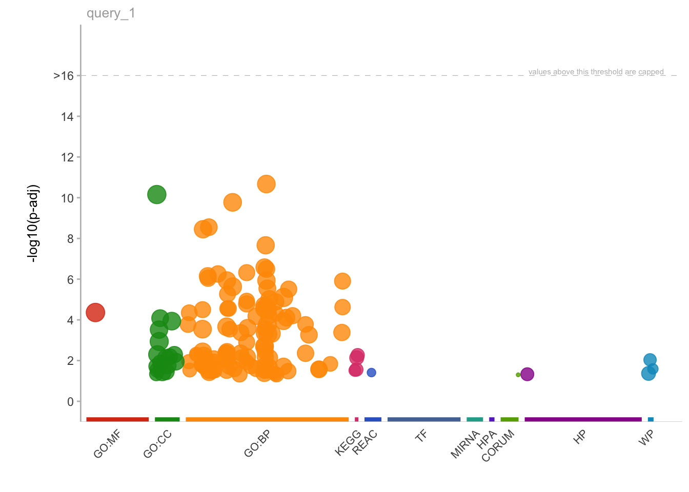

recurrence_table <- read.table("../MBMM25_uploadata//recurrence_chr12.matrix", sep = "\t")ChIP-seq_analysis_part2
Objetives
- Downstream analysis of differential expression data
- Perform gene ontology analysis on interesting gene groups
- Perform gene set enrichment analysis
- Inspecting data with Integrative Genome Viewer
Further downstream analyses
Once we have our differentially enriched regions, we can perform various downstream analyses to check the functional aspects of the group of regions which are up- or down-regulated in our condition of interest.
Loading tables
For these analyses, we will need to upload additional tables, that have been generated separately by us in order to speed up some computations and save memory. We introduced the content of these files on the first day, here we’ll do a brief recap.
recurrence_chr12.matrix: this is a table where you can find if any of the regions that constitute the consensus set of enhancer regions is identified as enhancers also in the individual samples.Korg_UP_regions_results.txtandNcr_UP_regions_results.txt: these files store the differential analysis results for the entire set of enhancers across all the genome and not only chr12 and, importantly, the regions listed in these files are annotated to gene symbols (we will talk about genomic region annotation later).
Import these files as R objects
tumor_up_res <- read.table("../MBMM25_uploadata/Korg_UP_regions_results.txt", sep = "\t", header = TRUE,
quote = "")
tumor_down_res <- read.table("../MBMM25_uploadata/Ncr_UP_regions_results.txt", sep = "\t", header = TRUE,
quote = "")Understanding recurrence of enhancer regions across patients
As the paper presenting our studies reports:
“To identify common epigenetic blueprints across the organoid library, we looked at the concordance of tumor-enriched enhancers in the PDOs (Patient-Derived Organoids).”
One of the downstream analyses that has been performed on the tumor-enriched enhancers (i.e. the enhancers with significantly higher H3K27ac signal compared to normal colon tissues) was aimed at understanding if there is a signature of genomic regions that are highly conserved and consistently active in the entire library of PDOs, which represent an especially interesting subset of regions being the most conserved enhancers.
In order to perform this analysis, we need to start from a binary table that indicates for each genomic region (i.e., the rows), if it was called as enhancer in each separate sample (i.e., the columns). This is our recurrence table:
dim(recurrence_table)
head(recurrence_table, 5)| SQ_2157 | SQ_1990 | SQ_2010 | SQ_2163 | SQ_2204 | SQ_2212 | SQ_2216 | SQ_2222 | SQ_2288 | SQ_2303 | SQ_2298 | SQ_2145 | GSM2058021 | GSM2058022 | GSM2058023 | Called_Korg | Called_Ncr | |
|---|---|---|---|---|---|---|---|---|---|---|---|---|---|---|---|---|---|
| reg_6364 | 0 | 0 | 0 | 0 | 0 | 0 | 0 | 0 | 0 | 0 | 0 | 0 | 1 | 1 | 0 | 0 | 2 |
| reg_6365 | 0 | 0 | 0 | 0 | 0 | 0 | 0 | 0 | 0 | 0 | 0 | 0 | 1 | 1 | 1 | 0 | 3 |
| reg_6366 | 0 | 0 | 0 | 0 | 0 | 0 | 0 | 0 | 0 | 0 | 0 | 0 | 1 | 1 | 1 | 0 | 3 |
| reg_6367 | 0 | 0 | 0 | 0 | 0 | 0 | 0 | 0 | 0 | 0 | 0 | 0 | 1 | 1 | 1 | 0 | 3 |
| reg_6368 | 0 | 0 | 0 | 0 | 0 | 0 | 0 | 0 | 0 | 1 | 0 | 0 | 0 | 0 | 1 | 1 | 1 |
In order to get the number of PDO samples and normal samples that share each genomic region in the consensus, we need to calculate the row-wise sum of all the ‘1’s in the table. > We have already performed this step for you: you can see the row-sums in the last two columns of the table, named ’Called_Korg’ and ‘Called_Ncr’ respectively for tumor and normal sample counts.
We will first extract the upregulated regions for chr12 using certain thresholds. Then we will retrieve information regarding the recurrence of these regions across all PDOs.
At this point we can use this code to generate a pie chart that illustrates the recurrence of the up-regulated regions across samples.
res <- read.table("../results/res_chr12.csv", header = TRUE, sep = "\t")
rownames(res) <- res$PeakID
head(res) PeakID logFC logCPM LR PValue
reg_6364 reg_6364 -1.4943851 7.812858 3.916181 4.782339e-02
reg_6365 reg_6365 -0.3455046 8.651352 0.681276 4.091477e-01
reg_6366 reg_6366 -3.6917987 7.187409 27.092621 1.939368e-07
reg_6367 reg_6367 -3.9379829 7.907521 40.470868 1.995695e-10
reg_6368 reg_6368 -1.1175852 6.537113 3.700392 5.439969e-02
reg_6369 reg_6369 -1.7393659 12.442966 36.882154 1.254894e-09up_regions <- res %>%
dplyr::filter(logFC >= 2 & PValue < 0.01) %>%
rownames()Tabulate information on the proportion of enhancers in each category.
library(dplyr)
# Filter the recurrence table for the significantly enriched enhancers in tumor samples and
# select only the columns with the row-sums
rec_df <- recurrence_table[up_regions, ] %>%
dplyr::select(contains("Called")) %>%
# Create a new column that group regions based on the extent of recurrence across samples
dplyr::mutate(group = case_when(Called_Korg %in% c(1:4) ~ "1-4", Called_Korg %in% c(5:7) ~ "5-7",
TRUE ~ "8-10")) %>%
# Aggregate regions based on the group
dplyr::group_by(group) %>%
dplyr::tally() %>%
dplyr::mutate(n = as.numeric(n)) %>%
dplyr::arrange(desc(group)) %>%
# Calculate frequencies for each group of regions
dplyr::mutate(prop = n/sum(n) * 100) %>%
# Compute cumulative sum
dplyr::mutate(cumsum = cumsum(prop)) %>%
dplyr::mutate(ypos = cumsum(prop) - 0.5 * prop) # To position the label at the middle of the slice Draw the plot.
# Make plot
rec_pie <- ggplot(rec_df, aes(x="", y=prop, fill=group)) +
geom_bar(stat='identity', width=1, color='white') +
coord_polar("y", start=0, direction=1) + # theta=variable to map angle to | start=Offset of starting point from 12 o'clock in radians | direction = clockwise or anti-clockwise.
theme_void() + # try to plot without it
theme(legend.position="none") +
geom_text(aes(y = ypos, label = group), color = "white", size=10) +
scale_fill_manual(values=c('orange2','coral3','red4'))
rec_pieA pie chart is a stacked bar chart with polar coordinates (a 2D coordinate system where each point is defined by its distance from a central point (the pole) and the angle it makes with a reference line (the polar axis).
Try to draw the stacked bar chart alone
We can print the frequencies as percentages, as we have calculated them in the above code.
rec_df %>%
dplyr::select(group, n, prop)| group | n | prop |
|---|---|---|
| 8-10 | 36 | 20.45455 |
| 5-7 | 51 | 28.97727 |
| 1-4 | 89 | 50.56818 |
As we can see from the table, there is a subset of enhancers, 20% of the upregulated enhancers in chromosome 12, which are consistently highly enriched in 8-to-10 tumor organoids compared to the normal colon (10 is the total number of PDOs examined in thatstudy). This core set of regions constitute a particularly interesting signature that likely drives the regulation of relevant genes in CRC tumor cells.
Annotating genomic regions to genes
One of the key steps when dealing with genomic features is their annotation to actual genes. Annotating genomic regions to genes involves the process of identifying and labeling specific regions of the genome with the genes they correspond to. This facilitates the process of understanding the genomic context of genes, including their regulation, and function.
One of the most reliable ways to annotate genomic regions to genes is through experimental techniques that directly measure interactions or associations between genomic elements and genes. Chromosome Conformation Capture (3C) techniques, in particular, can capture physical interactions between distant genomic regions, helping to identify enhancer-promoter interactions and other long-range interactions.
Annotating genomic regions to genes is a complex task that often requires a combination of experimental data and statistical analysis to establish associations.
Often, however, it is not easy to retrieve experimental data to annotate genomic regions to genes. In such case, the best strategy is to associate these regions to nearby genes. The annotation by TSS proximity is an approximation of the reality, but nevertheless serves as a good starting point for subsequent interpretations of the functional implications derived by the annotation.
For instance, researchers may investigate how regulatory elements affect gene expression or how genetic variants within regulatory regions impact gene function.
Enhancer distribution across known genomic features
In our case, the annotation to nearby TSS has already been performed using an external tool called Homer, which enables the annotation of regions to genes, but also the annotation of their genomic position with respect to relevant genomic features, like introns, exons, promoter-TSS regions, etc.
We will now check how our upregulated enhancers in tumor organoids are distributed across these genomic features, by plotting another pie chart.
# Subset upregulated regions
df_anno <- tumor_up_res %>%
group_by(annotation) %>% tally() %>%
filter(annotation!='NA') %>%
mutate(fraction = n/sum(n)) %>% # Compute percentages
mutate(ymax=cumsum(fraction)) %>% # Compute the cumulative percentages (top of each rectangle)
mutate(ymin=c(0, head(ymax, n=-1))) # Compute the bottom of each rectangle
df_anno# A tibble: 8 × 5
annotation n fraction ymax ymin
<chr> <int> <dbl> <dbl> <dbl>
1 3' 40 0.0101 0.0101 0
2 5' 4 0.00101 0.0111 0.0101
3 Intergenic 2224 0.560 0.571 0.0111
4 TTS 34 0.00856 0.579 0.571
5 exon 23 0.00579 0.585 0.579
6 intron 1605 0.404 0.989 0.585
7 non-coding 23 0.00579 0.995 0.989
8 promoter-TSS 21 0.00528 1 0.995 # Make the plot
anno_rect <- ggplot(df_anno, aes(ymax=ymax, ymin=ymin, xmax=4, xmin=3, fill=annotation)) +
geom_rect() +
coord_polar(theta="y") + # Try to remove that to understand how the chart is built initially
xlim(c(2, 4)) + # Try to remove that to see how to make a pie chart
scale_fill_brewer(palette=4)
#theme_void()
# Print plot
anno_rectTry to draw the same plot as stacked barplot
What is the genomic feature that harbors the majority of upregulated enhancer regions?
Gene Ontology Analysis
Now that we have the enhancers annotated to known human genes, we could perform a plethora of analyses in order to get other biological insights related to gene regulation. One of these is the Gene Ontology Enrichment analysis. We will try to get a more unsupervised look at what kind of biological processes are captured by the upregulated enhancers in CRC PDOs. We will do this using the gProfiler package in R.
Gene Ontology is a standardized system for annotating genes with terms describing their biological attributes. These terms are organized into three main categories: Molecular Function (the biochemical activity of the gene product), Biological Process (the broader biological objectives the gene contributes to), and Cellular Component (the location where the gene product is active).
The enrichment is evaluated in this way: a list of genes is compared against a background set of genes (e.g., all genes in the genome) to identify GO terms that are significantly overrepresented in the list of interest.
Statistical tests, such as Fisher’s exact test or hypergeometric test, are commonly used to determine whether the observed number of genes associated with a particular GO term in the gene list is significantly higher than expected by chance.
The output of GO enrichment analysis includes a list of significantly enriched GO terms along with statistical metrics, such as p-values or false discovery rates (FDR).
This information helps to prioritize genes for further study and provides further context to the experimental results!
First, we will create a custom function that takes as input a list of genes and automatically run the gProfiler function responsible for calulating the enrichment and also creating two plots: one that generally describes the categories of enriched terms, and another one more specific for enriched pathways from KEGG (aka, Kyoto Encyclopedia of Genes and Genomes).
# Result data.frames will be stored in this object
gprof <- c()
# genes: provide a character vector with gene names geneListName: a character identifying the
# list of genes that will be used to name the data.frame stored in res and to create the pdf
gprofiler <- function(genes, geneListName) {
# Parameters you might want to change: ordered_query: if the gene list provided is ranked
# evcodes: if you want to have the gene ids that intersect between the query and the term
# custom_bg: the gene universe used as a background
gostres <- gost(query = unique(as.character(genes)), organism = "hsapiens", ordered_query = FALSE,
multi_query = FALSE, significant = TRUE, exclude_iea = FALSE, measure_underrepresentation = FALSE,
evcodes = TRUE, user_threshold = 0.05, correction_method = "g_SCS", domain_scope = "annotated",
custom_bg = NULL, numeric_ns = "", sources = NULL, as_short_link = FALSE)
# Create the overview plot (not interactive)
gostplot <- gostplot(gostres, capped = TRUE, interactive = F)
# Keep only useful columns
gp_mod <- gostres$result[, c("query", "source", "term_id", "term_name", "p_value", "query_size",
"intersection_size", "term_size", "effective_domain_size", "intersection")]
gp_mod$query <- geneListName
# Calculate GeneRatio for the dotplot: number of genes intersecting the term/ total number
# of unique genes provided
gp_mod$GeneRatio <- gp_mod$intersection_size/gp_mod$query_size
# Number of genes within the term / number of all unique genes across all terms (universe)
gp_mod$BgRatio <- paste0(gp_mod$term_size, "/", gp_mod$effective_domain_size)
# Rename columns
names(gp_mod) <- c("Cluster", "Category", "ID", "Description", "p.adjust", "query_size", "Intersection_size",
"term_size", "effective_domain_size", "intersection", "GeneRatio", "BgRatio")
# Save the results data.frame in res
gprof[[geneListName]] <<- gp_mod
# Remove possible duplicate terms for plotting
gp_mod %>%
group_by(Description) %>%
filter(row_number() == 1)
# omit_ids <- gp_mod[duplicated(gp_mod$Description), ] omit_ids_list <-
# omit_ids$Description gp_mod <- gp_mod[!gp_mod$Description %in% omit_ids_list,]
go_table_pathways <- filter(gp_mod, Category %in% c("KEGG"))
# Calculate negLog P-Value and rank terms based on this value
go_table_pathways$negLogPval = -log10(go_table_pathways$p.adjust)
go_table_pathways <- go_table_pathways[order(-go_table_pathways$negLogPval), ]
# Make dot plot
dotPlot <- arrange(go_table_pathways, negLogPval) %>%
mutate(Description = factor(.$Description, levels = .$Description)) %>%
ggplot(aes(negLogPval, Description)) + geom_point(aes(color = negLogPval, size = GeneRatio)) +
scale_size(range = c(5, 9)) + scale_color_gradient(low = "blue", high = "red") + theme_light() +
ylab("Pathway") + theme(axis.text.y = element_text(size = 10), axis.text.x = element_text(size = 7),
legend.text = element_text(size = 7), legend.title = element_text(face = "bold"))
# Print on display
return(list(gostplot, dotPlot))
}Now, let’s extract a vector of genes associated to the most recurrent regulatory enhancers up-regulated in tumor samples, and perform the analysis:
# Extract regions with high recurrence (from all chromosomes)
all_enh_recur <- tumor_up_res %>%
filter(padj < 0.05 & log2FoldChange > 0 & Called_Korg >= 8)
# Extract corresponding genes
genes_up_recur <- all_enh_recur %>%
filter(!is.na(Gene.Name)) %>%
pull(Gene.Name) %>%
unique()We can check the number of genes that we have retrieved. We’ll relate this to the number of regions we start with.
paste("Number of recurrent enhancers:", length(all_enh_recur$PeakID))[1] "Number of recurrent enhancers: 687"paste("Number of genes associated to the recurrent enhancers:", length(genes_up_recur))[1] "Number of genes associated to the recurrent enhancers: 582"üí° Can you make a consideration about the differences between the number of regions and the number of corresponding genes?
We can now run the function created above to obtain our enriched biological pathways.
# Load package
library(gprofiler2)
# Run custom function
gprofiler(genes = genes_up_recur, geneListName = "genes_up_recur")[[1]]
[[2]]Here, interestingly, we find that the two most enriched biological pathways are “colorectal cancer” and “Hippo signalling pathway”.
From this insight we can start to generate new hypotheses, like the one tested in the study about the relevance of YAP/TAZ factors, which are indeed key downstream effectors of the Hippo signalling.
üí° GO analyses might highlight very interesting patterns and generate hypotheses, but are many times quite hard to interpret depending also on the biological system we are studying.
What information did we retrieve from the analysis?
gprof$genes_up_recur %>%
colnames() [1] "Cluster" "Category" "ID"
[4] "Description" "p.adjust" "query_size"
[7] "Intersection_size" "term_size" "effective_domain_size"
[10] "intersection" "GeneRatio" "BgRatio" table(gprof$genes_up_recur$Category)
CORUM GO:BP GO:CC GO:MF HP KEGG REAC WP
1 109 17 1 1 4 1 3 Can you retrieve the differentially expressed genes that are part of the Hippo signaling pathway?
[1] "BMP4,CTNNA2,TGFBR2,GSK3B,WWTR1,AREG,TCF7,FGF1,SERPINE1,WNT16,PPP2R2A,YWHAZ"[1] "JUN,GADD45A,DCC,MAP2K2,TGFBR2,GSK3B,AREG,PIK3R1,TCF7"Run enrichment analysis for regions with recurrence in at least 5/10 tumor samples
[[1]]
[[2]]# What class is gprof?
class(gprof)[1] "list"# What are the dimensions of the elements in gprof?
lapply(gprof, dim)$genes_up_recur
[1] 137 12
$genes_up_recur5
[1] 239 12Enrichment analysis using GSEA
Normally we would perform GSEA using all regions tested for differential analysis, ranked by their padj value x log2FC sign.
Here, we will merge the upregulated and downregulated regions and rank them based by their -log10(p-adjusted value) * the sign of the log2FoldChange, e.g. significantly upregulated genes are at the top of the rank whilst significantly downregulated ones are at the bottom. Given that we are dealing with regions and not genes, it is possible that multiple regions are annotated to the same gene. Thus, duplicate genes need to be removed from the ranking list. In doing so, we will keep the region with the most significant padj value, e.g. max(abs(padj x FC)).
We will retrieve gene sets from the Molecular Signatures Database (MSigDB)
# Rank the genes based on their padj x sign(log2FC)
ranked <- rbind(tumor_up_res, tumor_down_res) %>%
select(Gene.Name, log2FoldChange, padjxFC) %>%
filter(!Gene.Name == "") %>%
mutate(abs = abs(padjxFC)) %>%
# arrange(desc(abs)) %>%
arrange(desc(padjxFC)) %>%
group_by(Gene.Name) %>%
filter(row_number() == 1) %>%
# arrange(desc(padjxFC)) %>% tibble::column_to_rownames('Gene.Name') %>%
# filter(Gene.Name=='ARHGEF16')
pull(padjxFC, Gene.Name)
head(ranked)INSIG1 KRR1 PHLDA1 ACTL7B IGFL4 SCG2
21.093 17.403 16.816 15.909 15.447 14.599 tail(ranked) FAM90A26 UBE2K LOC101928269 MRC2 SNAR-I GC
-12.327 -12.395 -13.549 -13.684 -13.886 -14.254 Install and import libraries for fgsea and msigdbr
if (!require(fgsea, quiet = TRUE)) BiocManager::install("fgsea")if (!require(msigdbr, quiet = TRUE)) install.packages("msigdbr")Extract the curated gene sets (C2) from the MSigDB database
library(msigdbr)
# Extract specific gene sets from the MSigDB database
curated_gsets <- msigdbr(species = "human", category = "C2", subcategory = "CGP")Inspect the information and gene sets we retrieved.
names(curated_gsets) [1] "gene_symbol" "ncbi_gene" "ensembl_gene"
[4] "db_gene_symbol" "db_ncbi_gene" "db_ensembl_gene"
[7] "source_gene" "gs_id" "gs_name"
[10] "gs_collection" "gs_subcollection" "gs_collection_name"
[13] "gs_description" "gs_source_species" "gs_pmid"
[16] "gs_geoid" "gs_exact_source" "gs_url"
[19] "db_version" "db_target_species" "entrez_gene"
[22] "gs_cat" "gs_subcat" curated_gsets %>%
pull(gs_name) %>%
unique() %>%
head(2)[1] "ABBUD_LIF_SIGNALING_1_DN" "ABBUD_LIF_SIGNALING_1_UP"Check if there are any gene sets related to Colon Cancer.
curated_gsets %>%
filter(grepl("COLON_AND_RECTAL", gs_name)) %>%
head() gene_symbol ncbi_gene ensembl_gene db_gene_symbol db_ncbi_gene
1 ACTL8 81569 ENSG00000117148 ACTL8 81569
2 ADAMTSL4 54507 ENSG00000143382 ADAMTSL4 54507
3 AKR7A2 8574 ENSG00000053371 AKR7A2 8574
4 AOC2 314 ENSG00000131480 AOC2 314
5 B3GALNT1 8706 ENSG00000169255 B3GALNT1 8706
6 C14orf132 56967 ENSG00000227051 C14orf132 56967
db_ensembl_gene source_gene gs_id gs_name
1 ENSG00000117148 LOC81569 M15780 GRADE_COLON_AND_RECTAL_CANCER_DN
2 ENSG00000143382 TSRC1 M15780 GRADE_COLON_AND_RECTAL_CANCER_DN
3 ENSG00000053371 AKR7A2 M15780 GRADE_COLON_AND_RECTAL_CANCER_DN
4 ENSG00000131480 AOC2 M15780 GRADE_COLON_AND_RECTAL_CANCER_DN
5 ENSG00000169255 B3GALT3 M15780 GRADE_COLON_AND_RECTAL_CANCER_DN
6 ENSG00000227051 C14orf132 M15780 GRADE_COLON_AND_RECTAL_CANCER_DN
gs_collection gs_subcollection gs_collection_name
1 C2 CGP Chemical and Genetic Perturbations
2 C2 CGP Chemical and Genetic Perturbations
3 C2 CGP Chemical and Genetic Perturbations
4 C2 CGP Chemical and Genetic Perturbations
5 C2 CGP Chemical and Genetic Perturbations
6 C2 CGP Chemical and Genetic Perturbations
gs_description
1 Down-regulated genes in both rectal and colon carcinoma compared to normal mucosa samples.
2 Down-regulated genes in both rectal and colon carcinoma compared to normal mucosa samples.
3 Down-regulated genes in both rectal and colon carcinoma compared to normal mucosa samples.
4 Down-regulated genes in both rectal and colon carcinoma compared to normal mucosa samples.
5 Down-regulated genes in both rectal and colon carcinoma compared to normal mucosa samples.
6 Down-regulated genes in both rectal and colon carcinoma compared to normal mucosa samples.
gs_source_species gs_pmid gs_geoid gs_exact_source gs_url
1 HS 17210682 Table 5S: Colon < 1 & Rectum < 1
2 HS 17210682 Table 5S: Colon < 1 & Rectum < 1
3 HS 17210682 Table 5S: Colon < 1 & Rectum < 1
4 HS 17210682 Table 5S: Colon < 1 & Rectum < 1
5 HS 17210682 Table 5S: Colon < 1 & Rectum < 1
6 HS 17210682 Table 5S: Colon < 1 & Rectum < 1
db_version db_target_species entrez_gene gs_cat gs_subcat
1 2024.1.Hs HS 81569 C2 CGP
2 2024.1.Hs HS 54507 C2 CGP
3 2024.1.Hs HS 8574 C2 CGP
4 2024.1.Hs HS 314 C2 CGP
5 2024.1.Hs HS 8706 C2 CGP
6 2024.1.Hs HS 56967 C2 CGP# Filter the curated gene sets for the gene set of our interest
gene_set_name <- c("GRADE_COLON_AND_RECTAL_CANCER_UP", "GRADE_COLON_AND_RECTAL_CANCER_DN")
tex_sig_df <- curated_gsets %>%
filter(gs_name %in% gene_set_name)
head(tex_sig_df, 2) gene_symbol ncbi_gene ensembl_gene db_gene_symbol db_ncbi_gene
1 ACTL8 81569 ENSG00000117148 ACTL8 81569
2 ADAMTSL4 54507 ENSG00000143382 ADAMTSL4 54507
db_ensembl_gene source_gene gs_id gs_name
1 ENSG00000117148 LOC81569 M15780 GRADE_COLON_AND_RECTAL_CANCER_DN
2 ENSG00000143382 TSRC1 M15780 GRADE_COLON_AND_RECTAL_CANCER_DN
gs_collection gs_subcollection gs_collection_name
1 C2 CGP Chemical and Genetic Perturbations
2 C2 CGP Chemical and Genetic Perturbations
gs_description
1 Down-regulated genes in both rectal and colon carcinoma compared to normal mucosa samples.
2 Down-regulated genes in both rectal and colon carcinoma compared to normal mucosa samples.
gs_source_species gs_pmid gs_geoid gs_exact_source gs_url
1 HS 17210682 Table 5S: Colon < 1 & Rectum < 1
2 HS 17210682 Table 5S: Colon < 1 & Rectum < 1
db_version db_target_species entrez_gene gs_cat gs_subcat
1 2024.1.Hs HS 81569 C2 CGP
2 2024.1.Hs HS 54507 C2 CGPWe will prepare a gene set list retrieving the genes that are contained in each gene set (shown in the gs_name column).
# Create an empty gene set list
gset <- list()
# For each gene set in the data frame retrieve the gene symbols and store them in the gset
# list.
for (gs in unique(tex_sig_df$gs_name)) {
# subset the table for a gene set
tmp <- tex_sig_df %>%
filter(gs_name == gs)
# retrieve gene symbols
tmp_gset <- list(tmp$gene_symbol)
# names(tmp_gset) <- gene_set_name
# add the genes in the gset list
gset[gs] <- tmp_gset
}
lapply(gset, length)$GRADE_COLON_AND_RECTAL_CANCER_DN
[1] 102
$GRADE_COLON_AND_RECTAL_CANCER_UP
[1] 291gset$GRADE_COLON_AND_RECTAL_CANCER_DN
[1] "ACTL8" "ADAMTSL4" "AKR7A2" "AOC2" "B3GALNT1"
[6] "C14orf132" "C2orf88" "CA5A" "CACNA2D2" "CBS"
[11] "CCDC71" "CCR9" "CD28" "CDK12" "CFD"
[16] "CHST15" "CHST8" "COL4A5" "CPN2" "CX3CR1"
[21] "CYB5D1" "DAP" "DHPS" "FABP7" "FAN1"
[26] "FHL1" "FKRP" "GFI1" "GGA1" "GNA11"
[31] "GNPDA1" "GPC1" "GPR87" "GREB1" "GTF3C4"
[36] "HAUS5" "HIC2" "HMGXB4" "ITPKB" "JAM3"
[41] "KRT84" "LDB2" "LGALS2" "LRFN1" "LRTOMT"
[46] "LYPD3" "MEF2D" "MITF" "MSRA" "MYCN"
[51] "NAT8L" "NAV1" "NR1H4" "NR3C1" "NUDT11"
[56] "OSGIN2" "PARM1" "PARVB" "PCDHB5" "PDK4"
[61] "PGC" "PLAC8" "PLD1" "PLPP1" "PRKACB"
[66] "PRRT2" "PTPRZ1" "RERE" "SASH1" "SCAMP5"
[71] "SERTAD4" "SESN2" "SIRPB1" "SIX1" "SLC16A9"
[76] "SLC30A3" "SLC30A6" "SMIM14" "SNCA" "SOCS2"
[81] "SPIN4" "ST6GALNAC6" "STAR" "STAT5A" "SYNC"
[86] "TBC1D27P" "TGFBR3" "TIMM22" "TLE4" "TLN2"
[91] "TM9SF1" "TOX2" "TRPS1" "TYRP1" "UBAP1"
[96] "UGDH" "UNC5B" "XPNPEP3" "YY1AP1" "ZBTB4"
[101] "ZNF135" "ZNF787"
$GRADE_COLON_AND_RECTAL_CANCER_UP
[1] "AAMP" "AARS1" "ABCB8" "ABCF1" "ACBD6" "ADGRG1"
[7] "AHCY" "ALG1" "AMPD3" "ANXA5" "ATIC" "ATP6AP2"
[13] "AURKA" "AZGP1" "BACE2" "BORA" "BPHL" "C4BPB"
[19] "CAMSAP1" "CARHSP1" "CCDC191" "CCDC85B" "CCDC92" "CCNB1"
[25] "CCT5" "CCT7" "CCT8" "CD44" "CD46" "CDC25B"
[31] "CDC45" "CDC6" "CDCA7" "CDK1" "CDK7" "CEP57L1"
[37] "CFB" "CHCHD2" "CKS2" "CNBP" "COL4A1" "COPS8"
[43] "CSNK1E" "CSTF1" "CTSB" "DAP3" "DCAF7" "DDIT4"
[49] "DDX1" "DDX27" "DDX39A" "DDX39B" "DEF8" "DGAT2"
[55] "DHX8" "DHX9" "DNAJA3" "DNAJC2" "DNTTIP1" "DOLK"
[61] "DPM1" "DPY19L1" "DRG1" "DUSP18" "EEF1E1" "EFTUD2"
[67] "EIF2S2" "EIF3B" "EIF3E" "EIF4A1" "EIF4B" "EIF6"
[73] "EMC8" "ENG" "EPHB2" "EPRS1" "ERI1" "ETS2"
[79] "ETV4" "EXOC2" "FAM210B" "FBL" "FBXO11" "FDFT1"
[85] "FERMT1" "FXYD5" "GARS1" "GCLC" "GCSH" "GDF15"
[91] "GEMIN6" "GLO1" "GPSM2" "GSK3B" "GTF2F2" "GTF3A"
[97] "GTPBP10" "GYG2" "H2AZ1" "HELLS" "HILPDA" "HJURP"
[103] "HM13" "HMGB1" "HMGB2" "HNRNPA1" "HNRNPA2B1" "HNRNPD"
[109] "HNRNPK" "HOXB5" "HSPA4" "HSPA9" "HSPE1" "ICA1"
[115] "IFITM1" "IFRD1" "INTS7" "IRAK1" "ITGB5" "KARS1"
[121] "KBTBD2" "KIF23" "KNTC1" "KPNA3" "L1CAM" "LAMP1"
[127] "LAPTM4B" "LDHA" "LDHB" "LRP8" "LST1" "LY6E"
[133] "LYAR" "MACROH2A1" "MAGED2" "MARS1" "MBTPS2" "MCM2"
[139] "MCM3" "MCM4" "MCM5" "MCM7" "MDC1" "MELK"
[145] "METTL2B" "METTL3" "METTL5" "MKLN1" "MLST8" "MRGBP"
[151] "MRPL17" "MRPL3" "MRPL9" "MTHFD1" "MTHFD2" "MYC"
[157] "NAA10" "NDUFAF7" "NEBL" "NIP7" "NIT2" "NMI"
[163] "NOB1" "NOL8" "NONO" "NOP56" "NPM1" "NQO2"
[169] "NSMCE2" "NUSAP1" "OLA1" "OSER1" "PA2G4" "PABPC3"
[175] "PAFAH1B3" "PCNA" "PDCD2L" "PDCD6" "PDK3" "PDXK"
[181] "PERP" "PFDN2" "PKM" "PLAAT3" "PLAU" "PLCB4"
[187] "PLK1" "PMPCB" "PNPO" "PNPT1" "POFUT1" "POLD2"
[193] "POLQ" "POLR1D" "POLR2D" "POMP" "PPA1" "PPIA"
[199] "PRDX1" "PRDX4" "PRKDC" "PSMA1" "PSMA2" "PSMA3"
[205] "PSMB1" "PSMB3" "PSMB7" "PSMD14" "PSMD4" "PSMG1"
[211] "PTCD3" "PTDSS1" "PTPN12" "PXDN" "RAB4B" "RAN"
[217] "RBM26" "RCC1" "RCN1" "RFC2" "RFC5" "RHEB"
[223] "RLIM" "RMI2" "RRM1" "RRM2" "RTF2" "RTKN"
[229] "S100A14" "SAP18" "SEPHS1" "SERPINB5" "SET" "SFT2D3"
[235] "SH3GL1" "SHISA5" "SKA3" "SLC12A2" "SMPD4" "SNRPB"
[241] "SOD2" "SOX9" "SPARC" "SPATA13" "SPATA13" "SPP1"
[247] "SRP72" "SRSF1" "SRSF2" "SSB" "SSRP1" "SYAP1"
[253] "SYNCRIP" "TALDO1" "TARS1" "TBCE" "TCF7" "TFB1M"
[259] "TGDS" "TGFBI" "THEM6" "THOC3" "THY1" "TIMELESS"
[265] "TIMP1" "TKT" "TMEM97" "TMSB4Y" "TPI1" "TRAF5"
[271] "TRAP1" "TRUB2" "TTPAL" "UBD" "UBE2N" "UBR4"
[277] "URI1" "USP7" "USP9X" "UTP11" "VBP1" "VEGFA"
[283] "VKORC1L1" "WDR74" "WDR75" "XRN2" "ZDHHC9" "ZFAND1"
[289] "ZMYND8" "ZNF84" "ZNG1B" Run GSEA on our ranked list of genes using the gene sets we retrieve from MSigDB. Here, we set the number of permutations to 1000.
library(fgsea)
# Run GSEA
fgseaRes <- fgsea(pathways = gset, stats = ranked, nperm = 1000)Inspect the results
# Take a look at results
fgseaRes pathway pval padj ES NES
<char> <num> <num> <num> <num>
1: GRADE_COLON_AND_RECTAL_CANCER_DN 0.51594747 0.51594747 0.2120043 0.9682577
2: GRADE_COLON_AND_RECTAL_CANCER_UP 0.03208556 0.06417112 0.3032790 1.5517402
nMoreExtreme size leadingEdge
<num> <int> <list>
1: 274 41 CHST15, ....
2: 17 66 PLAU, TC....Plot GSEA results
# Plot GSEA results
for (gs in unique(gene_set_name)) {
print(plotEnrichment(gset[[gs]], ranked) + labs(title = gs))
}Can you retrieve the leading edge genes from the reuslts?
Region annotation with ChIPpeakAnno
We will try an alternative approach to annotate our enhancer regions leveraging the BioConductor package ChIPpeakAnno. First we create a GRanges object of the upregulated regions.
up.gr <- makeGRangesFromDataFrame(tumor_up_res, keep.extra.columns = TRUE)
up.grGRanges object with 3974 ranges and 15 metadata columns:
seqnames ranges strand | PeakID deseq
<Rle> <IRanges> <Rle> | <character> <character>
[1] chr1 3291000-3294200 * | reg_56 deseq_up
[2] chr1 3328800-3331400 * | reg_58 deseq_up
[3] chr1 3494000-3496400 * | reg_66 deseq_up
[4] chr1 3509400-3511000 * | reg_68 deseq_up
[5] chr1 3513400-3515200 * | reg_69 deseq_up
... ... ... ... . ... ...
[3970] chrX 151896800-151898400 * | reg_33047 deseq_up
[3971] chrX 151900600-151904600 * | reg_33048 deseq_up
[3972] chrX 154368400-154369200 * | reg_33071 deseq_up
[3973] chrY 9176000-9177600 * | reg_33097 deseq_up
[3974] chrY 9278000-9279800 * | reg_33099 deseq_up
baseMean log2FoldChange lfcSE stat pvalue padj
<numeric> <numeric> <numeric> <numeric> <numeric> <numeric>
[1] 11.53169 3.68190 0.775310 4.74894 2.04489e-06 4.04021e-05
[2] 11.22958 1.93821 0.735416 2.63553 8.40071e-03 2.66628e-02
[3] 8.20774 2.49910 1.033260 2.41865 1.55780e-02 4.27478e-02
[4] 6.61575 2.98599 0.956157 3.12290 1.79076e-03 8.15651e-03
[5] 6.80467 4.30521 1.071856 4.01659 5.90454e-05 5.82429e-04
... ... ... ... ... ... ...
[3970] 7.35329 3.39137 0.880766 3.85047 0.000117890 0.000998584
[3971] 16.29193 2.19479 0.765732 2.86627 0.004153423 0.015505174
[3972] 4.58607 2.22117 0.882322 2.51741 0.011821996 0.034497587
[3973] 3.78489 3.39099 1.217671 2.78482 0.005355755 0.018851664
[3974] 6.76525 4.25332 1.267348 3.35608 0.000790553 0.004332179
padjxFC region annotation Gene.Name
<numeric> <character> <character> <character>
[1] 4.394 chr1:3291000-3294200 intron ARHGEF16
[2] 1.574 chr1:3328800-3331400 intron ARHGEF16
[3] 1.369 chr1:3494000-3496400 intron ARHGEF16
[4] 2.088 chr1:3509400-3511000 intron MIR551A
[5] 3.235 chr1:3513400-3515200 intron MIR551A
... ... ... ... ...
[3970] 3.001 chrX:151896800-15189.. Intergenic MAGEA4-AS1
[3971] 1.810 chrX:151900600-15190.. Intergenic MAGEA4-AS1
[3972] 1.462 chrX:154368400-15436.. intron FLNA
[3973] 1.725 chrY:9176000-9177600 Intergenic RBMY1A3P
[3974] 2.363 chrY:9278000-9279800 Intergenic RBMY1A3P
Gene.Type Called_Korg Called_Ncr
<character> <integer> <integer>
[1] protein-coding 4 0
[2] protein-coding 4 0
[3] protein-coding 2 0
[4] ncRNA 2 0
[5] ncRNA 2 0
... ... ... ...
[3970] ncRNA 3 0
[3971] ncRNA 5 0
[3972] protein-coding 2 0
[3973] pseudo 2 0
[3974] pseudo 3 0
-------
seqinfo: 24 sequences from an unspecified genome; no seqlengths# Load the library
# if (!require(ChIPpeakAnno)) BiocManager::install('ChIPpeakAnno')
library(ChIPpeakAnno)To perform the annotation we need to incorporate information on gene structure and positions. We will import the annotation package for human assembly hg38 version 86 from Ensembl.
# Use Ensembl annotation package: if (!require(EnsDb.Hsapiens.v86))
# BiocManager::install('EnsDb.Hsapiens.v86')
library(EnsDb.Hsapiens.v86)
# ensembl.hs86.transcript <- transcripts(EnsDb.Hsapiens.v86)
ensembl.hs86.gene <- genes(EnsDb.Hsapiens.v86)# Use Ensembl annotation package:
up_peak_ensembl <- annotatePeakInBatch(up.gr, AnnotationData = ensembl.hs86.gene)
head(up_peak_ensembl, n = 2)GRanges object with 2 ranges and 24 metadata columns:
seqnames ranges strand | PeakID
<Rle> <IRanges> <Rle> | <character>
X0001.ENSG00000272235 chr1 3291000-3294200 * | reg_56
X0002.ENSG00000272235 chr1 3328800-3331400 * | reg_58
deseq baseMean log2FoldChange lfcSE
<character> <numeric> <numeric> <numeric>
X0001.ENSG00000272235 deseq_up 11.5317 3.68190 0.775310
X0002.ENSG00000272235 deseq_up 11.2296 1.93821 0.735416
stat pvalue padj padjxFC
<numeric> <numeric> <numeric> <numeric>
X0001.ENSG00000272235 4.74894 2.04489e-06 4.04021e-05 4.394
X0002.ENSG00000272235 2.63553 8.40071e-03 2.66628e-02 1.574
region annotation Gene.Name
<character> <character> <character>
X0001.ENSG00000272235 chr1:3291000-3294200 intron ARHGEF16
X0002.ENSG00000272235 chr1:3328800-3331400 intron ARHGEF16
Gene.Type Called_Korg Called_Ncr peak
<character> <integer> <integer> <character>
X0001.ENSG00000272235 protein-coding 4 0 0001
X0002.ENSG00000272235 protein-coding 4 0 0002
feature start_position end_position
<character> <integer> <integer>
X0001.ENSG00000272235 ENSG00000272235 3306636 3310096
X0002.ENSG00000272235 ENSG00000272235 3306636 3310096
feature_strand insideFeature distancetoFeature
<character> <character> <numeric>
X0001.ENSG00000272235 - downstream 19096
X0002.ENSG00000272235 - upstream -18704
shortestDistance fromOverlappingOrNearest
<integer> <character>
X0001.ENSG00000272235 12436 NearestLocation
X0002.ENSG00000272235 18704 NearestLocation
-------
seqinfo: 24 sequences from an unspecified genome; no seqlengthsWe can now annotate the Ensembl IDs with the corresponding gene symbols. Here, we will use the org.Hs.eg.db database.
if (!require("org.Hs.eg.db", quietly = TRUE)) BiocManager::install("org.Hs.eg.db")library(org.Hs.eg.db)
# Use Ensembl annotation package:
up_peak_ensembl <- addGeneIDs(annotatedPeak = up_peak_ensembl,
orgAnn = "org.Hs.eg.db",
#mart = mart,
feature_id_type = "ensembl_gene_id",
IDs2Add = "symbol")
head(up_peak_ensembl, n = 2)GRanges object with 2 ranges and 25 metadata columns:
seqnames ranges strand | PeakID
<Rle> <IRanges> <Rle> | <character>
X0001.ENSG00000272235 chr1 3291000-3294200 * | reg_56
X0002.ENSG00000272235 chr1 3328800-3331400 * | reg_58
deseq baseMean log2FoldChange lfcSE
<character> <numeric> <numeric> <numeric>
X0001.ENSG00000272235 deseq_up 11.5317 3.68190 0.775310
X0002.ENSG00000272235 deseq_up 11.2296 1.93821 0.735416
stat pvalue padj padjxFC
<numeric> <numeric> <numeric> <numeric>
X0001.ENSG00000272235 4.74894 2.04489e-06 4.04021e-05 4.394
X0002.ENSG00000272235 2.63553 8.40071e-03 2.66628e-02 1.574
region annotation Gene.Name
<character> <character> <character>
X0001.ENSG00000272235 chr1:3291000-3294200 intron ARHGEF16
X0002.ENSG00000272235 chr1:3328800-3331400 intron ARHGEF16
Gene.Type Called_Korg Called_Ncr peak
<character> <integer> <integer> <character>
X0001.ENSG00000272235 protein-coding 4 0 0001
X0002.ENSG00000272235 protein-coding 4 0 0002
feature start_position end_position
<character> <integer> <integer>
X0001.ENSG00000272235 ENSG00000272235 3306636 3310096
X0002.ENSG00000272235 ENSG00000272235 3306636 3310096
feature_strand insideFeature distancetoFeature
<character> <character> <numeric>
X0001.ENSG00000272235 - downstream 19096
X0002.ENSG00000272235 - upstream -18704
shortestDistance fromOverlappingOrNearest symbol
<integer> <character> <character>
X0001.ENSG00000272235 12436 NearestLocation <NA>
X0002.ENSG00000272235 18704 NearestLocation <NA>
-------
seqinfo: 24 sequences from an unspecified genome; no seqlengthsCompare the annotation we got from HOMER (Gene.Name column) to the annotation from ChIPpeakAnno (symbol column). You can generate a data.frame object for better visualization.
up_peak_ensembl %>%
dplyr::select(region, annotation, Gene.Name, symbol)GRanges object with 3990 ranges and 4 metadata columns:
seqnames ranges strand |
<Rle> <IRanges> <Rle> |
X0001.ENSG00000272235 chr1 3291000-3294200 * |
X0002.ENSG00000272235 chr1 3328800-3331400 * |
X0003.ENSG00000272088 chr1 3494000-3496400 * |
X0004.ENSG00000272088 chr1 3509400-3511000 * |
X0005.ENSG00000272088 chr1 3513400-3515200 * |
... ... ... ... .
X3970.ENSG00000147381 chrX 151896800-151898400 * |
X3971.ENSG00000147381 chrX 151900600-151904600 * |
X3972.ENSG00000196924 chrX 154368400-154369200 * |
X3973.ENSG00000224408 chrY 9176000-9177600 * |
X3974.ENSG00000197038 chrY 9278000-9279800 * |
region annotation Gene.Name
<character> <character> <character>
X0001.ENSG00000272235 chr1:3291000-3294200 intron ARHGEF16
X0002.ENSG00000272235 chr1:3328800-3331400 intron ARHGEF16
X0003.ENSG00000272088 chr1:3494000-3496400 intron ARHGEF16
X0004.ENSG00000272088 chr1:3509400-3511000 intron MIR551A
X0005.ENSG00000272088 chr1:3513400-3515200 intron MIR551A
... ... ... ...
X3970.ENSG00000147381 chrX:151896800-15189.. Intergenic MAGEA4-AS1
X3971.ENSG00000147381 chrX:151900600-15190.. Intergenic MAGEA4-AS1
X3972.ENSG00000196924 chrX:154368400-15436.. intron FLNA
X3973.ENSG00000224408 chrY:9176000-9177600 Intergenic RBMY1A3P
X3974.ENSG00000197038 chrY:9278000-9279800 Intergenic RBMY1A3P
symbol
<character>
X0001.ENSG00000272235 <NA>
X0002.ENSG00000272235 <NA>
X0003.ENSG00000272088 <NA>
X0004.ENSG00000272088 <NA>
X0005.ENSG00000272088 <NA>
... ...
X3970.ENSG00000147381 MAGEA4
X3971.ENSG00000147381 MAGEA4
X3972.ENSG00000196924 FLNA
X3973.ENSG00000224408 <NA>
X3974.ENSG00000197038 <NA>
-------
seqinfo: 24 sequences from an unspecified genome; no seqlengthsWhy do you think there are differences in the annotation?
Take-home Messages üè†
Congratulations! You got the end of the course and now hopefully know some crucial aspects of a ChIP-seq analysis workflow! Some of the key concepts that we have explored during the course can enable us to reach some distilled points of interest:
Design your experiments carefully with data analysis in mind!
Data needs to be carefully explored to avoid systematic errors in the analyses!
Plot and Visualize as much as possible!
Not all information is useful, remember that it all depends on the biological question!
Omics outputs are immensely rich and one experiment can be used to answer a plethora of questions!